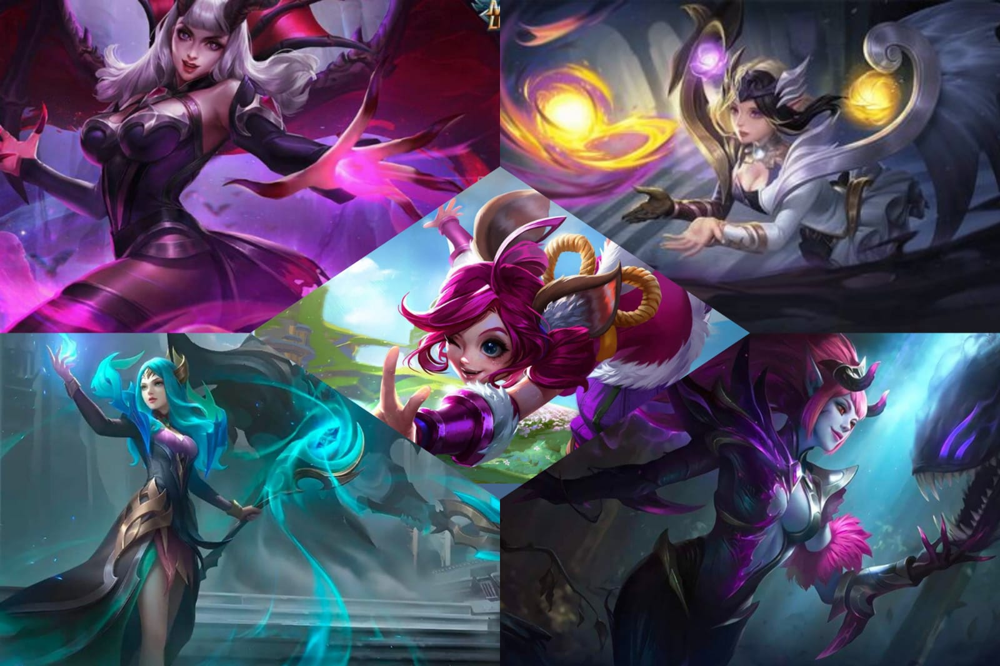

Buffs, nerfs, ajustes e atualização de herói

Bem-vindo à nova atualização! Desta vez, as palavras-chave são: Rota de EXP, rotas e
luta em equipe. Queremos ver mais ação nas rotas durante a fase de rotas e permitir que
os jogadores possam decidir se querem ou não participar das lutas em equipe pela
Tartaruga. Soldados robustos e Tanks resistentes terão o Machado de Guerra e a Armadura
de Peito Bruto renovados como itens principais. Enquanto o Machado de Guerra oferece
Dano Real suficiente, a Armadura de Peito Bruto garante um equilíbrio entre ataque e
defesa.
Enquanto isso, vários heróis mais antigos receberão atualizações e otimizações na
jogabilidade! Com isso nós esperamos trazer uma experiência de batalha ainda melhor.
Os seguintes heróis foram ajustados nesta atualização: Vexana BUFF ↑, Nana BUFF ↑,
Balmond BUFF ↑, Vale BUFF ↑, Barats BUFF ↑, Alice BUFF ↑, Lunox BUFF ↑,
Selena BUFF ↑ e Lancelot ADJUSTE ~.
Usamos as seguintes indicações BUFF ↑ Fortalecimento, NERF ↓ Enfraquecimento e ADJUSTE ~ Ajuste para simplificar.